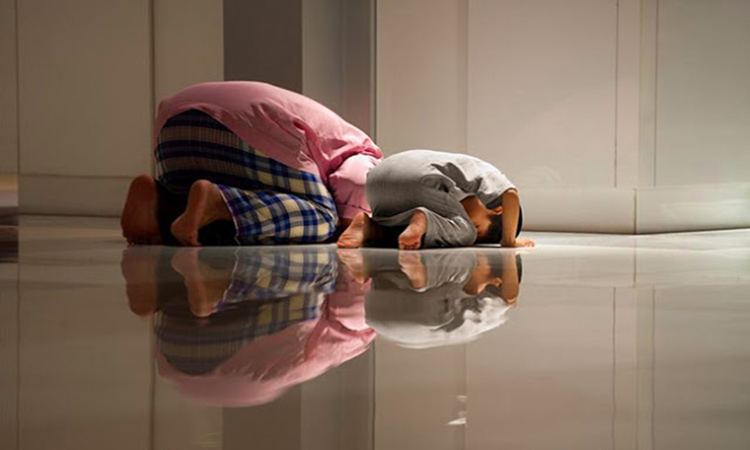

Ada salah satu cara jitu yang bisa kita amalkan agar kita bisa untuk mudah bersyukur kepada Allah. Dengan mudah bersyukur, secara tidak langsung kita telah mengajak neurotic dalam tubuh untuk mengakui kebesaran Tuhan.
-
Cara Supaya Mudah Bersyukur
-
Tawakal Dalam Setiap Keadaan
Tawakal adalah amalan yang harus senantiasa membersamai setiap aktifitas kita. Dalam banyak ayat, Allah Ta´ala menjelaskan bahwasanya seorang mukmin harus bertawakal dalam berbagai kondisi.
-

Keutamaan Sholat Sunnah
Dan sesungguhnya anjuran melakukan shalat Sunnah di rumah, karena dia lebih tersembunyi dan lebih menjauhkan dari riya, lebih terjaga dari kesia-siaan.